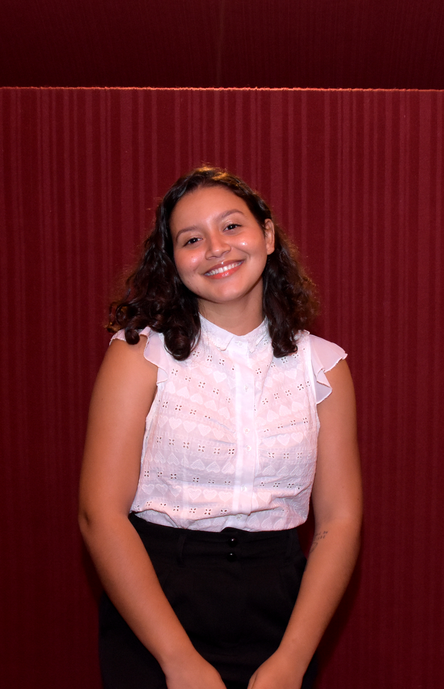

Esta reportagem multimídia foi realizada com o objetivo de servir como produto de avaliação para o Trabalho de Conclusão de Curso na graduação de Jornalismo, na Universidade Federal de Alagoas (UFAL). Minha orientadora para a produção deste trabalho foi a Profa. Dra. Mercia Pimentel. A produção foi iniciada durante o ano de 2023, com entrevistas realizadas online por meio de um aplicativo de mensagens instantânea e contato presencial para humanização da narrativa e produção de fotos autorais.
Minha paixão pelo tema parte do interesse pelo jornalismo alternativo e independente em Alagoas que se intensificou desde a Greve dos Jornalistas, em 2019, em que participei como estudante da graduação ainda nos períodos iniciais do curso. Enquanto pesquisadora na área de comunicação, sempre me atentei para a possibilidade de analisar e registrar as novas iniciativas de jornalismo no estado e a importância desses veículos para o cenário local.
O recorte de gênero surge pela minha inquietação e atravessamentos por meio do feminismo com sua interseccionalidade que sempre se fez presente na minha trajetória pessoal e profissional. Entrevistar mulheres jornalistas nordestinas, nesse sentido, engajadas nesse tipo de jornalismo voltado para o lado social foi essencial para compreender e também trazer à tona as vivências, representatividades, desafios, conquistas e impactos que me são comuns e atravessam tantas outras estudantes e jornalistas em atuação. A experiência vai me guiar nos meus próximos estudos e pesquisas na área, enriquecendo minha carreira acadêmica.
Todo o conteúdo escrito em texto foi redigido por mim, Kamilla Abely, bem como as fotografias captadas (com exceção das imagens de acervo cedidas pelas fontes entrevistadas). Para a idealização, programação e organização do site, contei com o apoio e serviços de José Miguel Bezerra e Mabel Dias.
Este Trabalho de Conclusão de Curso não reflete a opinião da Universidade Federal de Alagoas. Seu conteúdo e abordagem são de total responsabilidade de seu autor.
Sobre a autora

Tenho 23 anos, sou natural de Arapiraca e a primogênita de cinco filhas mulheres. Escolhi o
jornalismo como profissão ainda no ensino médio pelo meu gosto pela escrita. Durante a graduação,
tive experiências em assessoria, comunicação interna e redação de notícias. Tenho autoria no livro
"Dos nós às contas: Alagoas costura uma nova história" e já conquistei alguns prêmios de jornalismo
na categoria estudante. Encontrei-me na área acadêmica, integrando projetos de pesquisa e extensão e
produzindo artigos em colaboração com outros pesquisadores. Atualmente, pesquiso sobre jornalismo
local e alternativo, mídia e gênero e letramento transmídia. Em breve, iniciarei o mestrado no
Programa de Pós-Graduação em Comunicação da Universidade Federal de Sergipe.
Site publicado em janeiro de 2024.